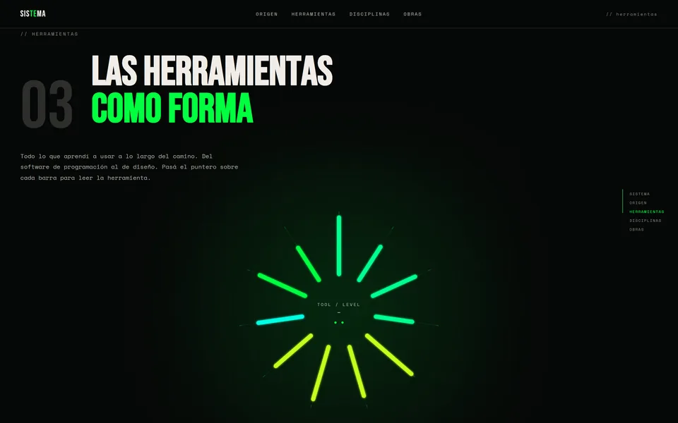
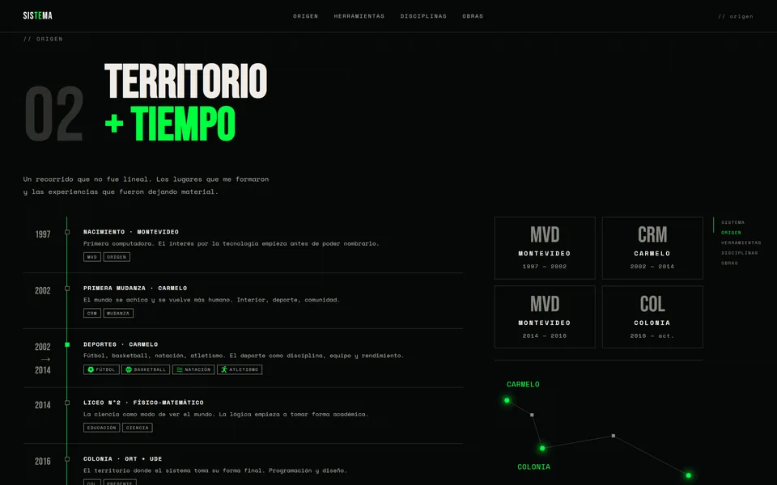
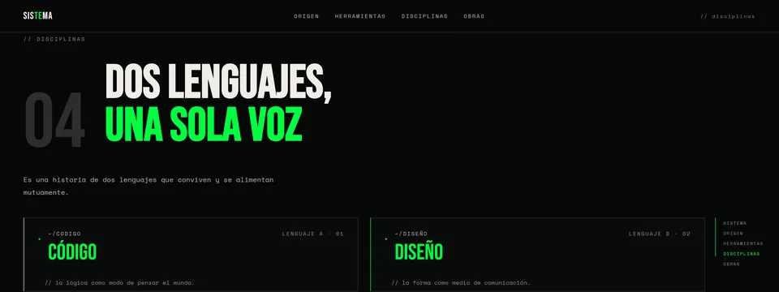
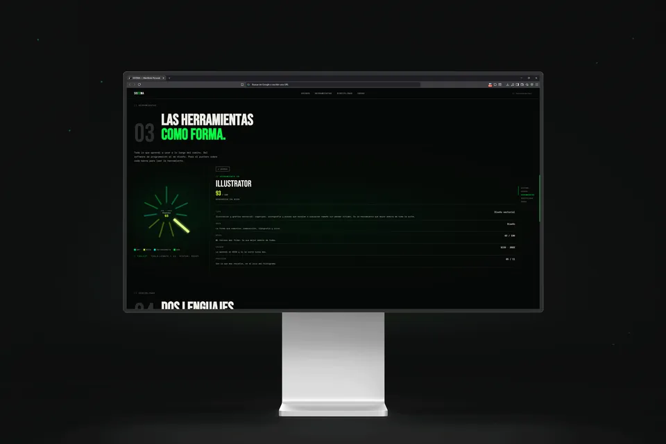
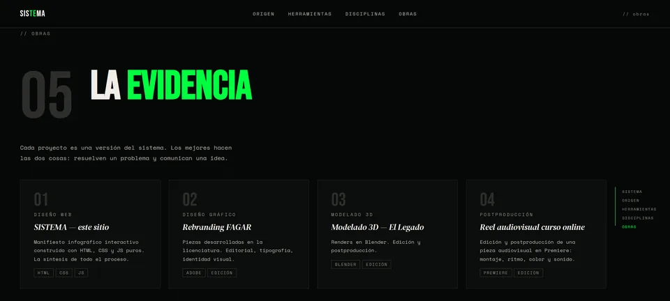
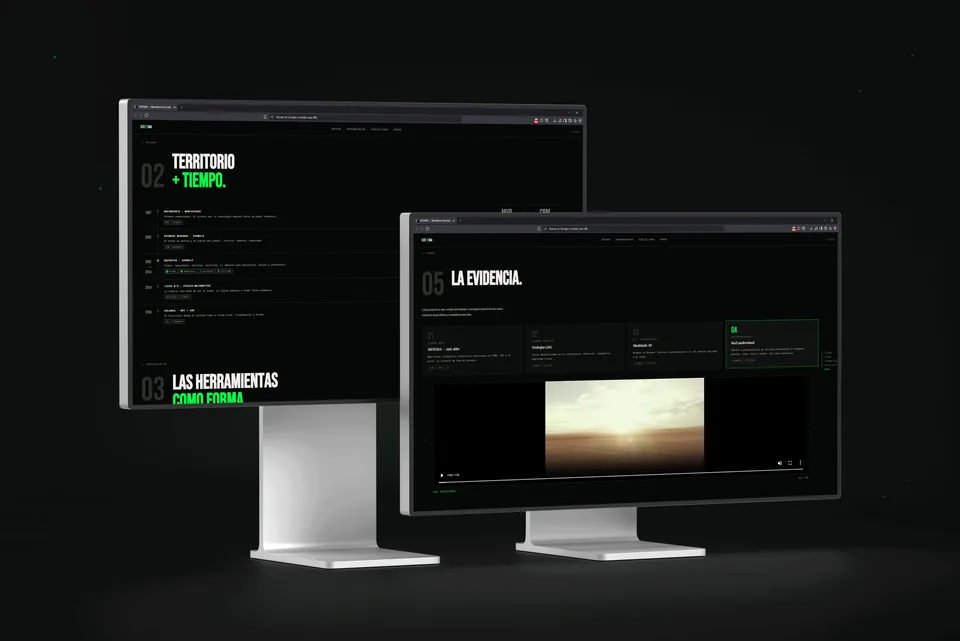

04 / 07
SISTEMA
My personal identity as a website: the path between code and design.
- Year
- 2026
- Context
- 5th semester final project, UDE
- Role
- Concept, design and development

SISTEMA is an infographic manifesto. The question was how to show a career that doesn't run in a straight line (programming, editing, design) without apologising for it. The answer was to treat it as a system: parts that say nothing on their own and that, together, make a sense none of them had alone.
The decision
A single terminal green on black, from start to finish. I actually built a colour for code and another for design, with a transition between them, and then removed it: two colours say there are two things balancing each other. The project says it is one thing, seen from two angles.

- Console green#00FF41
- Background#060807
- White · text#F0EDE8


Elements
Navigation is a sphere that works as a graph, borrowed from Dijkstra. The tools histogram is radial because a baseline makes a ranking, and no tool here is better than another. The geometry isn't drawn: JavaScript builds it from the data.
Code generates the form; design makes it legible.



Typography
The piece changes temperature when it stops showing data and speaks in the first person: Space Mono for structure, Bebas Neue to anchor each zone and DM Serif Display for the personal voice.

